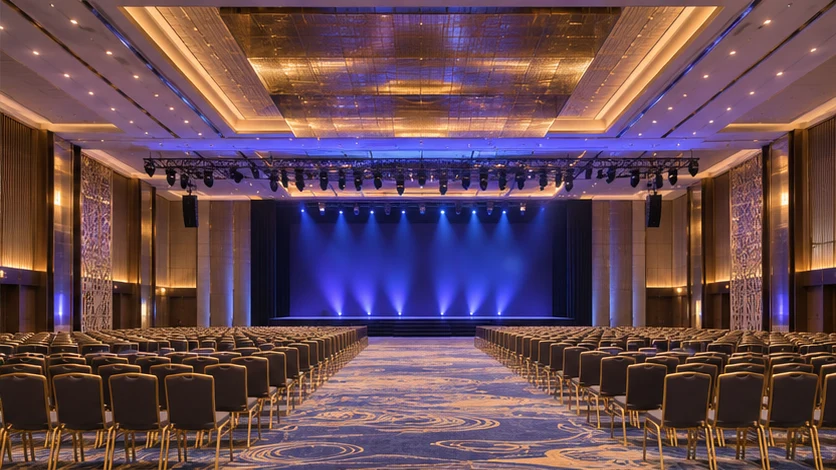

Konferensi & pertunjukan
Plenary Hall
Auditorium melingkar dengan akses dari lantai utama dan mezzanine.
- Teater
- 5.000 kursi
Senayan · Jakarta
Pilih ruang, pelajari konfigurasi, dan siapkan brief untuk konferensi, pameran, atau jamuan Anda.
Jelajahi ruang
Katalog ruang
Pencarian kapasitas memakai angka yang tercantum untuk tiap konfigurasi. Kapasitas pameran perlu dikonfirmasi ke JCC.
Konferensi & pertunjukan
Auditorium melingkar dengan akses dari lantai utama dan mezzanine.

Jamuan & acara korporat
Ruang 3.921 m² untuk format jamuan duduk maupun buffet.

Pameran & registrasi
Area serbaguna untuk pameran, registrasi, dan kebutuhan sebelum sesi utama.
Tidak ada ruang dengan kapasitas terverifikasi untuk filter ini. Ubah konfigurasi atau jumlah peserta.
Untuk penyelenggara
Siapkan tanggal, jumlah peserta, dan pilihan ruang agar diskusi dengan tim venue lebih terarah.
Untuk pengunjung
Agenda contoh untuk demonstrasi.